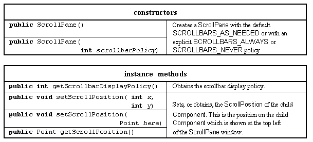
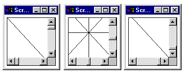

The final Component to be introduced in this chapter is the ScrollPane class which is a composite component supplying a window onto a larger child component and whose view of its single child component can be controlled by using its associated vertical and horizontal Scrollbars. The major resources of the ScrollPane class are given in Table 2.21.

Table 2.21of the ScrollPane class. Major resources
To illustrate the use of this class it will be implemented with a much larger Canvas based CrossDoodle instance contained within it. The CrossDoodle class is so called as it overrides the paint() method to draw a four lined cross within itself. The appearance of the ScrollPaneExample class with the Scrollbars adjusted to show the upper left, middle and lower right of the contained CrossDoodle, as indicated by the location of the Scrollbar's sliders, is shown in Figure 2.20.

Figure 2.20 The ScrollPaneExample showing the top left, middle
and bottom right of the contained CrossDoodle.
The implementation of the CrossDoodle class, contained within the ScrollPaneExample's class file, is as follows.
0041 class CrossDoodle extends Canvas {
0042
0043 protected CrossDoodle( int width, int height) {
0044 super();
0045 this.setSize( width, height);
0046 } // End CrossDoodle constructor.
0047
0048
0049 public void paint( Graphics context) {
0050
0051 int width = this.getBounds().width;
0052 int height = this.getBounds().height;
0053
0054 context.drawLine( 0, 0, width, height);
0055 context.drawLine( 0, height, width, 0);
0056 context.drawLine( width/2, 0, width/2, height);
0057 context.drawLine( 0, height/2, width, height/2);
0058 } // End paint
0059 } // End class CrossDoodle.
The constructor is comparable to the previous, Doodle and PoppingDoodle, constructors. The paint() method draws four lines: from top left to bottom right on line 0054, from bottom left to top right on line 0055, vertically down the middle on line 0056 and horizontally across the middle on line 0057. An instance of this class is added to a ScrollPane instance in the ScrollPaneExample classes' init() method, as follows.
0001 // Filename ScrollPaneExample.java.
0002 // Provides an initial example of the AWT ScrollPane class.
0003 // Written for the Java interface book Chapter 2 - see text.
0004 //
0005 // Fintan Culwin, v 0.2, August 1997.
0006
0007 import java.awt.*;
0008 import java.awt.event.*;
0009 import java.applet.*;
0010
0011
0012 public class ScrollPaneExample extends Applet {
0013
0014 private CrossDoodle aCrossDoodle;
0015 private ScrollPane aScrollPane;
0016
0017 public void init() {
0018 aCrossDoodle = new CrossDoodle( 500, 550);
0019 aScrollPane = new ScrollPane( ScrollPane.SCROLLBARS_ALWAYS);
0020 aScrollPane.add( aCrossDoodle);
0021 this.add( aScrollPane);
0022 } // End init.
On line 0018 a 500 by 500 (pixel) CrossDoodle instance called aCrossDoodle is constructed and, on line 0019, an instance of the ScrollPane class called aScrollPane is constructed with its scroll bar policy set to SCROLLBARS_ALWAYS. On line 0020 the CrossDoodle instance is added to the ScrollPane instance and the ScrollPane instance added to the applet Panel on line 0021. This is all that is required for the scrolling behaviour illustrated in Figure 2.20 to be implemented, the ScrollPane automatically supplying the connection between the user's interactions with the Scrollbars and panning the CrossDoodle underneath its window.